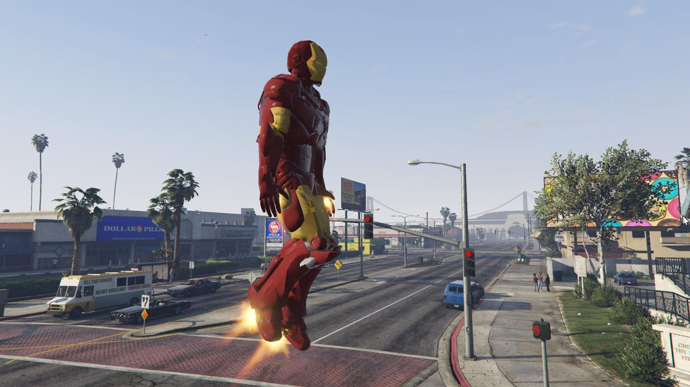

Чтобы установить скины для GTA 5 нужно скачать ScriptHookV и ScriptHookVdonet, вместе с этим надо скачать и сам скрипт на скины, этот скрипт называется "AddonPeds Editor", перемещаем этот файл и AddonPedsVars в папку с игрой, а остальные файлы которые вы скачали в scripts (кроме скинов), если у вас нет этой папки, то создайте, дальше скачуем OpenIV и до него эти файлы: Asi Loader, OpenIV.Asi и openCamera в папку с игрой. Дальше выбираем mods/update/x64/dlcpacks /addonpeds/dlc.rpf/peds.rpf и сюда перемещаем сам скин(ы). Потом открываем файл AddonPeds Editor ОТ ИМЕНИ АДМИНИСТРАТОРА и нажемаем peds/new peds, в первом окне пишем название скина, во втором выбираем male (мужчина) или female (женщина), и в третём выбираем true (если ваш скин с папкой) или false (если ваш скин просто файлы). Если скин не работает скорей всего скин сломаный.
